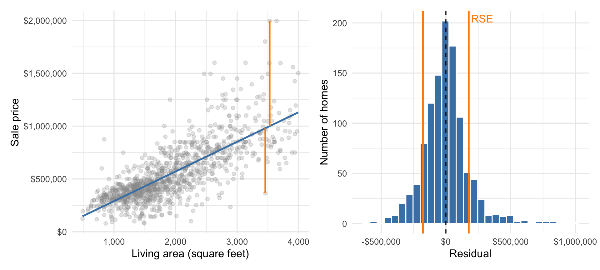
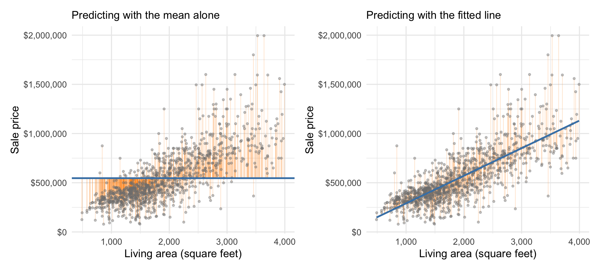

| Estimate | Std. error | 95% CI | t | p-value | |
|---|---|---|---|---|---|
| Intercept | $10,103 | $14,577 | [−$18,499, $38,706] | 0.69 | 0.488 |
| Living area (sq ft) | $280 | $7 | [$266, $294] | 39.53 | <0.001 |
| Residual standard error | $176,900 | ||||
| R² / Adjusted R² | 0.587 / 0.586 | ||||
| n | 1,103 |
20 Measuring Prediction Error
The residuals of the last chapter measure prediction error one house at a time. This chapter summarizes them into overall measures of how well a regression predicts.
Two measures are commonly used to quantify how well a linear regression predicts the outcome variable: the residual standard error (RSE) and \(R^2\). The RSE is an absolute measure of prediction error, while \(R^2\) is a relative measure. We outline each below, and compare them along the way.
20.1 The typical prediction error: Residual standard error
A single residual tells us how wrong one prediction was. Most statistical software summarizes their typical size as the residual standard error (RSE).
Definition 20.1: Residual standard error
The residual standard error is the standard deviation of the residuals — the typical size of a prediction error, in the outcome’s original units.
Software computes the RSE with a slightly different divisor than the \(n-1\) in the ordinary standard deviation: it subtracts the number of estimated coefficients instead. The difference never matters. When \(n\) is much larger than the number of coefficients both divisors agree, and when it isn’t, no estimate of the error variance is reliable anyway.
NoteKey idea: Three kinds of “typical” error
A standard deviation is the typical departure of a value from its mean. A standard error is the typical size of an estimation error — how far a statistic like \(\bar{x}\) lands from the parameter it estimates. A residual standard error is the typical size of a prediction error — how far outcomes land from the model’s predictions. The names are similar; the questions are different. A standard error shrinks toward zero as \(n\) grows, because estimates improve with more data. The RSE does not, because more data doesn’t make individual sale prices any less variable.
For the Austin model, the RSE is $176,900. Predictions from area alone therefore miss the observed sale prices by about $177,000 in a typical case. The direction varies; the RSE describes error size. Any statistical software will report the RSE (sometimes under a different name, like “residual standard deviation” or “sigma”) alongside the fitted coefficients, as in Table 20.1.
Figure 20.1 connects that number to the residuals themselves. The left panel shows two houses’ vertical prediction errors, and the right panel shows the distribution of all errors.

20.2 The proportion of variance “explained”: \(R^2\)
The RSE gives us a direct, absolute measurement of the size of a typical prediction error. \(R^2\) gives us a relative measure instead, by comparing the RSE to the standard deviation of the outcome variable. Remember, the standard deviation of prices measures how unpredictable the sale price is when we don’t know anything about the house at all. The RSE — the standard deviation of the residuals — measures how unpredictable the sale price is after we know the house’s living area, provided the relationship is close to linear. Comparing the two gives us a measure of how strong the linear relationship is; the stronger the linear relationship, the smaller the RSE is relative to the standard deviation of prices.
Comparing the two is actually equivalent to comparing the residuals from two linear models: One where the slope is artificially set to zero, so there is only an intercept — the null model — and one where the slope is estimated from the data. Figure 20.2 shows both.

Mathematically, \(R^2\) is defined as \[ R^2 = \frac{s_y^2 - s_e^2}{s_y^2} = 1 - \left[\frac{s_e}{s_y}\right]^2, \] where \(s_y\) is the standard deviation of the outcome — sale price — and \(s_e\) is the standard deviation of the residuals, both computed with the ordinary \(n-1\) divisor. The smaller the RSE is relative to the standard deviation of prices, the closer \(R^2\) is to 1. This represents a strong linear relationship; after making the best prediction we can with a line, a large proportion of the total unpredictability in prices goes away. If the RSE is comparable to the standard deviation of prices, \(R^2\) is close to 0. This represents a weak linear relationship; after making the best prediction we can with a line, most of the total unpredictability in prices remains.
That ratio can be computed with two different bookkeeping choices, and regression software reports both. Plugging the software’s RSE in for \(s_e\) gives \(1 - (\text{RSE}/s_y)^2 = 0.586\), the value Table 20.1 reports as adjusted \(R^2\). Computing the two standard deviations with matching divisors instead gives 0.587, the value the table reports as \(R^2\). The divisor bookkeeping is the only difference between the two versions, so we’ll write \(R^2\) for both and tell them apart only when reading them off a table. When the two disagree by more than a little, either the signal is very weak or the model has too many coefficients for the data in hand. Neither version deserves your trust then.
Notation 20.1: Samples in Latin, populations in Greek
We use Latin letters for quantities computed from data: \(\bar{x}\) for a sample mean, \(s\) for a sample standard deviation, \(r\) for a sample correlation, and now \(s_e\) for the standard deviation of the residuals. Operator and Greek notation — \(\text{Var}(\cdot)\), \(\sigma^2\), \(\epsilon\) — is reserved for random variables and for population or model parameters, like the model error and its standard deviation arriving in the next chapter.
20.2.1 What is \(R^2\) measuring?
Most textbooks will refer to \(R^2\) as the “proportion of variance explained” by the predictors (or covariates, in other books’ vocabulary). For a simple linear regression fit via ordinary least squares, we can show that
\[ s_y^2 = s_{\hat{y}}^2 + s_e^2, \]
where \(s_{\hat{y}}^2\) is the variance of the fitted values, \(s_e^2\) is the variance of the residuals, and all three variances share one divisor. There is no covariance term from the variance rules of Section 15.2 because least-squares residuals are uncorrelated with the fitted values. Then
\[ R^2 = \frac{s_y^2 - s_e^2}{s_y^2} = \frac{s_{\hat y}^2}{s_y^2} \]
is literally the proportion of variability in \(y\) that is “soaked up” by the line.
It’s important to keep in mind, however, that explaining and predicting aren’t the same thing. The ancient Mayans could accurately predict eclipses far out into the future, but explained them as conflicts between Gods rather than the result of the Earth and Moon’s orbits. \(R^2\) is a measure of how predictable \(y\) is from \(x\) in a linear model. That doesn’t mean it measures how well we can explain changes in \(y\) from changes in \(x\). You can see this plainly yourself by predicting the size of a house from its price. You’ll get the same \(R^2\) value, but it would be crazy to say the price of a house “explains” its size.
\(R^2\) has one more equivalent form: it is the squared correlation between the outcome and the fitted values, \(R^2 = \text{corr}(y, \hat{y})^2 = 0.587\) for the Austin model. This generalizes the correlation between \(y\) and one \(x\) to the correlation between \(y\) and the best linear combination of many \(x\)’s at once. In a simple regression the fitted values are a linear function of the single predictor, so \(\text{corr}(y, \hat{y})^2 = r^2\) — the squared correlation between \(x\) and \(y\) itself.
Technical detail 20.1: Aligning the forms of \(R^2\)
The ratio form and the correlation form line up exactly once the divisors match. Write both variances with the same divisor — \(1/n\) or \(1/(n-1)\), so long as they match — and the divisors cancel in the ratio: \[ 1 - \frac{s_e^2}{s_y^2} = 1 - \frac{\sum_i e_i^2}{\sum_i (y_i - \bar y)^2}, \] the sum-of-squares form other books write as \(1 - \text{SSE}/\text{SST}\). That quantity equals \(\text{corr}(y, \hat{y})^2\) exactly, and it is the \(R^2\) row software reports. The adjusted version differs only by using the RSE’s divisor in the numerator.
And since it is correlation in disguise, \(R^2\) inherits correlation’s limits. In particular:
- \(R^2\) is susceptible to extreme values/outliers. The four datasets in Anscombe’s quartet all produce the same \(R^2\) value in a linear regression, including the two where an outlier manufactured a positive correlation or obscured a perfectly linear relationship.
- A low \(R^2\) does not rule out a strong nonlinear relationship. In our Tesla/S&P 500 and electrical grid load/temperature example, the two pairs had nearly identical correlations even though load was much more dependent on temperature than Tesla’s returns were on market returns. Correlation understated the load–temperature relationship because that relationship is nonlinear. We’d see the same pattern comparing \(R^2\) from linear models fit to each dataset.
While we’re talking about the limitations of \(R^2\) let’s clear up some other common misunderstandings:
\(R^2\) doesn’t “add up”. As we add variables to a regression model, the change in \(R^2\) measures the amount of new predictive information we get. Take our three models from the last chapter: simple regressions on area and the number of bedrooms, and the multiple regression incorporating both. Area alone gives \(R^2 =\) 0.587, and bedrooms alone gives \(R^2 =\) 0.176. Their sum is 0.763, but the model with both predictors has \(R^2 =\) 0.601.
Why? Living area already carries much of the information in the number of bedrooms, since homes with more bedrooms also tend to be larger. Or, put another way, we can quite accurately predict the number of bedrooms a house has from its size, so the size “contains” a lot of the information about the number of bedrooms. Adding bedrooms after area therefore raises \(R^2\) by only 0.014. Table 20.2 collects the three models and their fit statistics.
| Area | Bedrooms | Area + bedrooms | |
|---|---|---|---|
| Intercept | $10,103 | −$7,973 | $149,451 |
| [−$18,499, $38,706] | [−$80,442, $64,495] | [$98,227, $200,676] | |
| Living area (sq ft) | $280 | $320 | |
| [$266, $294] | [$302, $338] | ||
| Bedrooms | $167,087 | −$64,894 | |
| [$145,705, $188,469] | [−$84,840, −$44,948] | ||
| Residual standard error | $176,900 | $249,764 | $173,791 |
| R² | 0.587 | 0.176 | 0.601 |
| Adjusted R² | 0.586 | 0.175 | 0.601 |
| n | 1,103 | 1,103 | 1,103 |
WarningWarning: A high \(R^2\) is not a small error
A high value for \(R^2\) doesn’t mean the model is accurate enough to make good decisions. The Austin model has \(R^2 =\) 0.587, which is a rather strong linear relationship. But its RSE is $177,000, which is a large error in absolute terms. If we’re trying to use the model to price our house, or to decide what to bid on a house we want to buy, the size of a typical prediction error — the RSE — is much more important than the strength of the linear relationship between price and the predictors — \(R^2\).
WarningWarning: A low \(R^2\) does not rule out a relationship
A low \(R^2\) does not rule out a linear relationship. For example, if we fit a linear model predicting the sale price of the house from its age alone, the \(R^2\) value is small — about 0.084. That doesn’t mean there is no relationship between age and price; it means that the relationship is weak relative to the total variability in sale prices. That is as expected: there are many other factors which contribute much more to the variability in prices (like size, for example.)
Similarly, in the course evaluations data the simple linear regression of evaluation on beauty has \(R^2 =\) 0.036. That doesn’t mean there is no relationship between beauty and evaluation scores; it means that the relationship is weak relative to the total variability in evaluation scores. If you think about the course evaluations you’ve completed as an undergraduate, you were probably more concerned with other factors than the instructor’s beauty, like how well they explained the material, how fair the grading was, and so on. All of those factors end up in the residuals, hence the low \(R^2\) value.
If we want to ask whether there’s a linear relationship, the right question is about the slope: Is zero a plausible value for the slope, given the data in hand? We answer this with a confidence interval or hypothesis test about the slope, not by using \(R^2\). In the course evaluation data, that confidence interval is [0.070, 0.196], which does not include zero. Therefore, we conclude that there is a linear relationship between beauty and evaluation scores, even though the linear relationship is quite weak. Whether a relationship of this size matters in context is a separate question.
20.3 The two low-\(R^2\) models
Table 20.3 and Table 20.4 give the fits behind the last two examples.
| Estimate | Std. error | 95% CI | t | p-value | |
|---|---|---|---|---|---|
| Intercept | $721,057 | $19,070 | [$683,640, $758,475] | 37.81 | <0.001 |
| Age (years) | −$3,837 | $381 | [−$4,585, −$3,089] | −10.07 | <0.001 |
| Residual standard error | $263,289 | ||||
| R² / Adjusted R² | 0.084 / 0.083 | ||||
| n | 1,103 |
| Estimate | Std. error | 95% CI | t | p-value | |
|---|---|---|---|---|---|
| Intercept | 3.998 | 0.025 | [3.948, 4.048] | 157.73 | <0.001 |
| Beauty rating | 0.133 | 0.032 | [0.070, 0.196] | 4.13 | <0.001 |
| Residual standard error | 0.545 | ||||
| R² / Adjusted R² | 0.036 / 0.034 | ||||
| n | 463 |